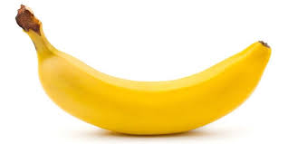
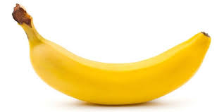

Банани — трав'янисті рослини з могутньою кореневою системою, коротким стеблом, що не виступає над землею і 6—20 листками, піхви яких утворюють подобу стовбура.
Банан
Фрукт полезный, можно употреблять
Банани — трав'янисті рослини з могутньою кореневою системою, коротким стеблом, що не виступає над землею і 6—20 листками, піхви яких утворюють подобу стовбура.
Фрукт полезный, можно употреблять